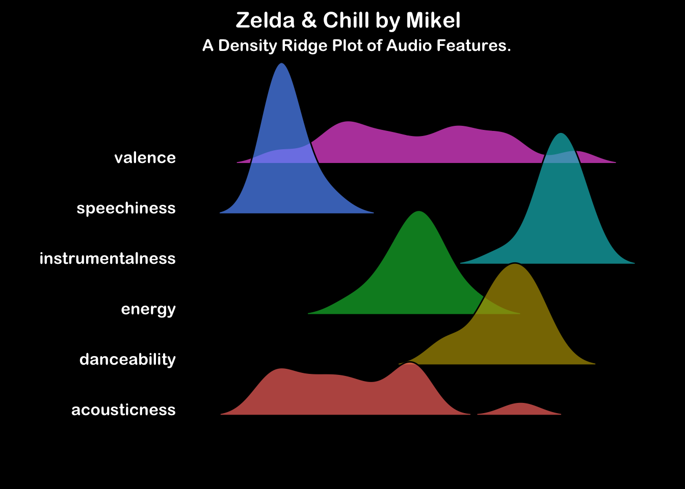

Zelda & Chill
Electronic
Lofi
Video Game Music
A Lofi Homage to Nintendo’s Zelda Series, composed by Mikel & GameChops
Introduction
…
Note
…
…
…
…
Let’s take a look at the audio feature analysis for this album. For a formal description of the audio feature categories presented here, please consult the Spotify Developer API Documentation.
Interpreting the Ridge Plot (Click to expand)
These ridge plots show a histogram of the mean audio feature values across each track in the album. Look across the horizontal axis at where the peaks for each feature occur. For example, if the album contains lots of tracks with busy vocals, the speechiness feature will show a peak to the right of the horizontal axis. Conversely, an instrumental album would have a speechiness peak to the left of the horizontal axis but you would also expect it to have a peak to the right of the axis in the instrumentalness feature.
…
The Tracks
Below are the mean audio feature values for each track. The last row (green) presents a mean summary of the album.
| track_name | danceability | energy | speechiness | acousticness | instrumentalness | valence |
|---|---|---|---|---|---|---|
| Fairy Fountain | 0.6710000 | 0.5250000 | 0.0506000 | 0.4040000 | 0.924 | 0.2830000 |
| Dark World | 0.6700000 | 0.3380000 | 0.0569000 | 0.4400000 | 0.864 | 0.5620000 |
| Lost Woods | 0.7150000 | 0.5440000 | 0.0513000 | 0.0895000 | 0.935 | 0.9080000 |
| Song of Storms | 0.6750000 | 0.4580000 | 0.0305000 | 0.0181000 | 0.889 | 0.4790000 |
| Minuet of Forest | 0.7910000 | 0.4820000 | 0.0434000 | 0.1750000 | 0.857 | 0.6980000 |
| Gerudo Valley | 0.8430000 | 0.4340000 | 0.0844000 | 0.4400000 | 0.832 | 0.1670000 |
| Oath to Order | 0.7830000 | 0.4640000 | 0.1500000 | 0.7480000 | 0.805 | 0.2200000 |
| Dragon Roost Island | 0.7730000 | 0.2450000 | 0.0582000 | 0.2530000 | 0.932 | 0.5530000 |
| Kakariko Village | 0.7110000 | 0.4330000 | 0.1990000 | 0.4520000 | 0.905 | 0.6260000 |
| Ballad of the Goddess | 0.7590000 | 0.4100000 | 0.0595000 | 0.0061500 | 0.821 | 0.3540000 |
| Breath of the Wild | 0.5410000 | 0.4050000 | 0.0418000 | 0.0471000 | 0.840 | 0.0387000 |
| Hateno Village | 0.7600000 | 0.3470000 | 0.0337000 | 0.3430000 | 0.689 | 0.3940000 |
| Legend of Zelda | 0.5210000 | 0.6270000 | 0.0265000 | 0.2510000 | 0.847 | 0.7260000 |
| Ocarina of Time | 0.6440000 | 0.4870000 | 0.0419000 | 0.1540000 | 0.858 | 0.2450000 |
| Album Mean | 0.7040714 | 0.4427857 | 0.0662643 | 0.2729179 | 0.857 | 0.4466929 |
Air …
Infiltrator …
Blood and steel …
Dharma …
Highs and Lows
… ## Overall
…